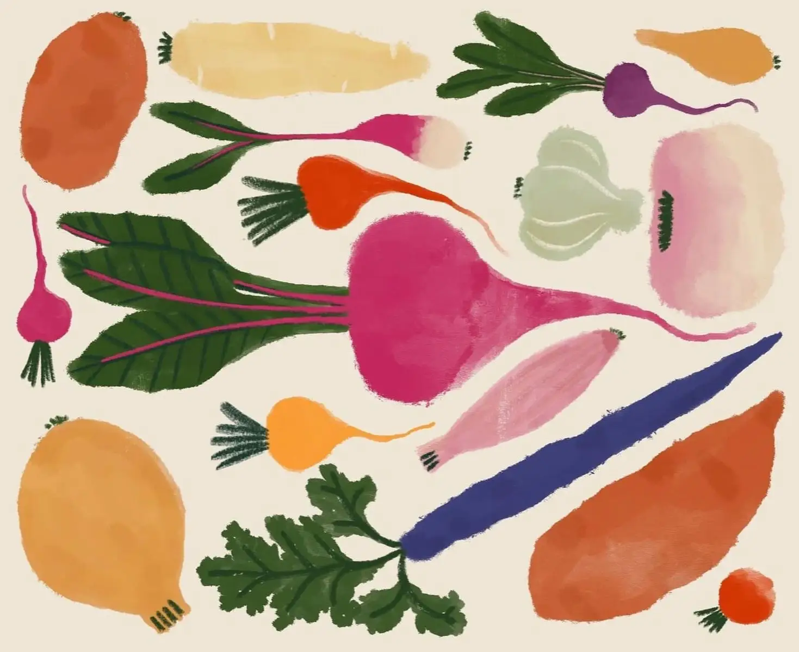

JARDINERA
Om os
Vi skaber opmærksomhed omkring jordbrug og økologi alt imens du forbinder dig med naturen i din egen baghave eller altan. Skab biodiversitet, gro dine egne grøntsager eller plant en masse blomster.

Tomater
30 kr. / stk.

Rødbeder
30 kr. / stk.

Butternut squash
30 kr. / stk.

Gulerødder
30 kr. / stk.